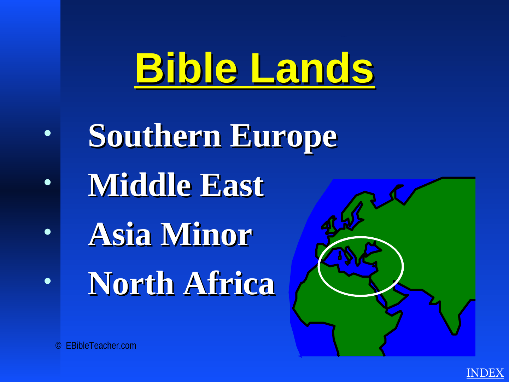

Jerusalem
A central city across the kingdom period, Temple worship, the life of Jesus, and the early Church.
2 Samuel 51 Kings 8Luke 19–24
Explore selected places drawn from the structure of the supplied atlas. The map is intentionally original rather than a copied slide image.

These entries are brief by design but far deeper than the earlier prototype, and they are ready to be expanded into dedicated place pages.
A central city across the kingdom period, Temple worship, the life of Jesus, and the early Church.
Connected with David and presented in the New Testament as the birthplace of Jesus.
The Galilean town associated with Jesus' upbringing and public identity as Jesus of Nazareth.
A major setting for Jesus' Galilean ministry near the Sea of Galilee.
A city associated with the conquest narratives and later New Testament events.
Traditional regional setting connected with Israel's wilderness journey and covenant at Sinai.
A major imperial center connected with Judah's exile and the book of Daniel.
Presented in the source as part of Abraham's origin setting before Haran and Canaan.
A key stopping point in the Abraham narratives before the move toward Canaan.
A major Pauline city connected with Acts and the Corinthian correspondence.
A Greek city associated with Paul's speech at the Areopagus.
A major Pauline ministry center and one of the seven churches addressed in Revelation.
A Macedonian city tied to Paul's mission and the letter to the Philippians.
A major Macedonian stop connected with Paul's mission and two New Testament letters.
The imperial center and destination of Paul's journey in Acts 27–28.
Island associated in Acts with Paul's shipwreck on the journey to Rome.